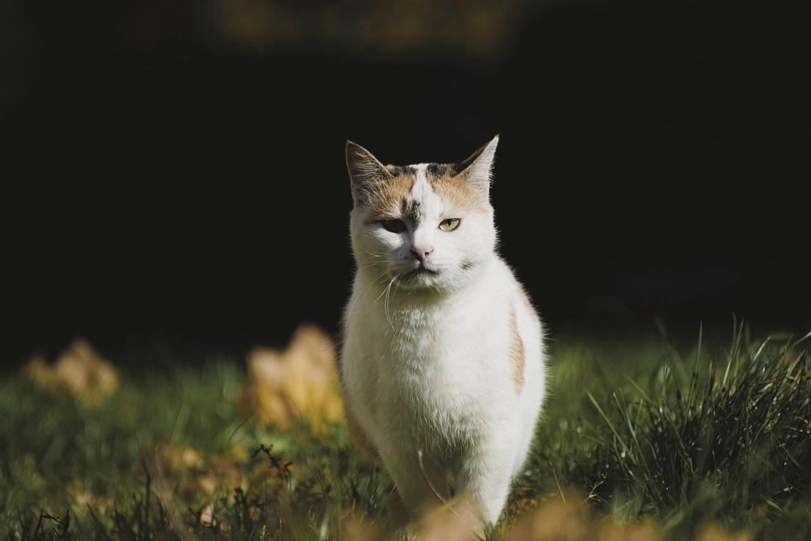

Purring
Purring is something that pretty much every single cat does, but interestingly we know less about why cats make this noise compared with other noises they’re famous for (like hissing or chirping). The reality is that purring has many different meanings. “Cats often purr when they’re feeling relaxed, but they may also purr to self-soothe if they are feeling stressed or are injured,” says JoAnna Pendergrass, DVM, a veterinarian based in Atlanta. “When kittens are born, mama cats purr, creating a vibration to guide kittens to mom’s nipple to nurse. Cats will also purr to socialize with other cats and communicate with their owners that they want something.”
Purring is something that pretty much every single cat does, but interestingly we know less about why cats make this noise compared with other noises they’re famous for (like hissing or chirping). The reality is that purring has many different meanings. “Cats often purr when they’re feeling relaxed, but they may also purr to self-soothe if they are feeling stressed or are injured,” says JoAnna Pendergrass, DVM, a veterinarian based in Atlanta. “When kittens are born, mama cats purr, creating a vibration to guide kittens to mom’s nipple to nurse. Cats will also purr to socialize with other cats and communicate with their owners that they want something.”
Showing its belly
Here’s an all-too-familiar scenario: Your sweet Max stretches out and shows off his fuzzy belly, which makes you want to reach out and give him a little pat or affectionate scritch. Only this is met with a rescinded offer—perhaps even a batting of the paw or a light bite. Strange cat behavior, indeed! “When cats expose their bellies to us, they are saying they trust us. But when we take them up on this ‘offer’ by rubbing their bellies, they may retract it with a bite or a scratch, as it was only meant as a form of communication,” explains Sam Meisler, DVM, a veterinarian and founder of PetWellClinic. If you establish even more trust you may be able to go in for the pets without reprimand, but be gentle and keep in mind this is a physical expression of trust more than it is an invitation. You may not recognize these subtle ways that your cat is showing affection.
Here’s an all-too-familiar scenario: Your sweet Max stretches out and shows off his fuzzy belly, which makes you want to reach out and give him a little pat or affectionate scritch. Only this is met with a rescinded offer—perhaps even a batting of the paw or a light bite. Strange cat behavior, indeed! “When cats expose their bellies to us, they are saying they trust us. But when we take them up on this ‘offer’ by rubbing their bellies, they may retract it with a bite or a scratch, as it was only meant as a form of communication,” explains Sam Meisler, DVM, a veterinarian and founder of PetWellClinic. If you establish even more trust you may be able to go in for the pets without reprimand, but be gentle and keep in mind this is a physical expression of trust more than it is an invitation. You may not recognize these subtle ways that your cat is showing affection.
Wagging its tail
When a cat “wags” its tail, it’s not the same joyful response you get with a happy dog wag. In fact, it may mean the opposite. “A cat tail wag can be more of a warning,” notes Evelyn Kass, DVM, a veterinarian with Pet Nutrition Doctor. “The tail wag is a sign of heightened excitement, annoyance, or frustration. The thrashing tail generally means ‘stop what you are doing or I am going to get angry and might bite you. '” She adds that when the tip of the tail is wagging, it is often a sign your cat is ready to pounce on their favorite toy, or perhaps on your leg.
When a cat “wags” its tail, it’s not the same joyful response you get with a happy dog wag. In fact, it may mean the opposite. “A cat tail wag can be more of a warning,” notes Evelyn Kass, DVM, a veterinarian with Pet Nutrition Doctor. “The tail wag is a sign of heightened excitement, annoyance, or frustration. The thrashing tail generally means ‘stop what you are doing or I am going to get angry and might bite you. '” She adds that when the tip of the tail is wagging, it is often a sign your cat is ready to pounce on their favorite toy, or perhaps on your leg.
Purring is something that pretty much every single cat does, but interestingly we know less about why cats make this noise compared with other noises they’re famous for (like hissing or chirping). The reality is that purring has many different meanings. “Cats often purr when they’re feeling relaxed, but they may also purr to self-soothe if they are feeling stressed or are injured,” says JoAnna Pendergrass, DVM, a veterinarian based in Atlanta. “When kittens are born, mama cats purr, creating a vibration to guide kittens to mom’s nipple to nurse. Cats will also purr to socialize with other cats and communicate with their owners that they want something.”
Cats Behavior